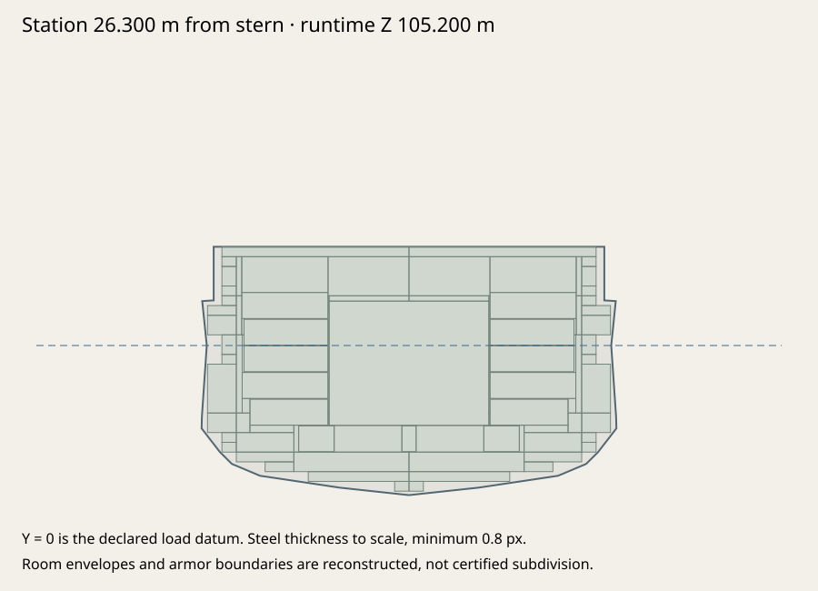
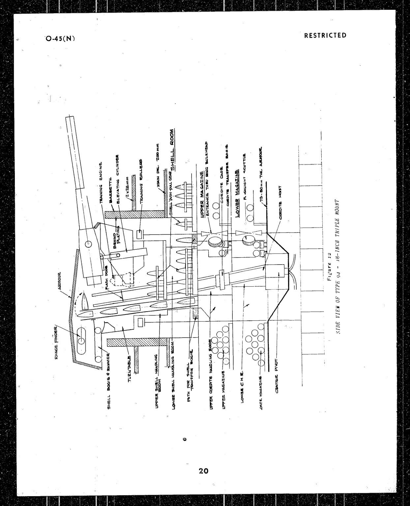
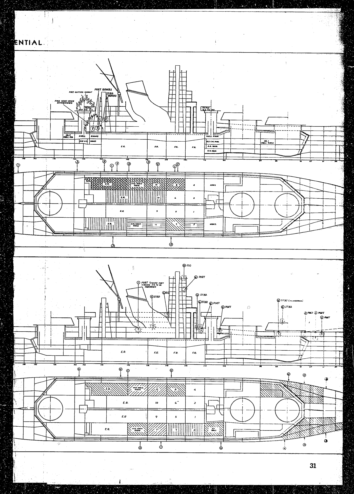

Yamato · fidelity 01
7 April 1945 exterior; 10.4 m trial datum. Matched pre-pass and current exported geometry, documented dimensions, structural probes and historical evidence. Both authored stages use the same twelve fixed cameras.
Build b0bed026943c · 264,906 triangles · 110 meshes. Engineering verification is not historical certification.
Identical fixed cameras; no rescaling between authored stages.
Current GLB · b0bed026943cPreserved original · 35f5274eb871
Dimensions and mounting datums
| Measurement | Exported | Target | Deviation | Build tolerance | Evidence |
|---|
| length | 263.0000 m | 263.0000 m | +0.0000 m | ±0.025 m | usntmj-s062 |
|---|
| beam | 38.9000 m | 38.9000 m | +0.0000 m | ±0.025 m | kure-museum-data |
|---|
| draft | 10.4000 m | 10.4000 m | -0.0000 m | ±0.025 m | usntmj-s062 |
|---|
| waterlineLength | 256.0000 m | 256.0000 m | +0.0000 m | ±0.025 m | usntmj-s062 |
|---|
| waterlineBeam | 36.9000 m | 36.9000 m | +0.0000 m | ±0.025 m | usntmj-s062 |
|---|
| midshipDepth | 18.9150 m | 18.9150 m | -0.0000 m | ±0.025 m | tamiya-principal-dimensions |
|---|
Actual transformed hull triangles, not accessor bounds. 44,642 hull triangles; 0 nonmanifold edges; 0 degenerate faces. 195 room envelopes fit the loft. All 5 mounting-axis export checks pass. Tolerances check authored datums; source uncertainty remains separate.
Measurements, axes and probes · Modeling specification · Editable blueprint · Export/articulation checks
Hull, protection and provisional spaces

Authored hull and deckhouse surfaces take CPU hits. Exterior armor replaces nearby nominal skin; open hangars stay open. Gunhouse facets move with their original joints. Only hull contacts create sea breaches. Nominal plating, ballistics and flooding capacities are estimates.
midship-belt: Port main belt (410 mm) → Starboard main belt (410 mm)
protected-deck: Main armored deck (200 mm)
bow: hull
stern: hull
bridge: operations-tower
empty-air: MISS
All twelve registered before/after views
Live game review
Historical runtime evidence · reviewed export e386fddd3669, current export b0bed026943c. Preserved pre-master-integration WebGPU run. A newer export is not silently certified by these earlier captures; see the fleet integration report.
Orca / WebGPU. UI battery firing and reset records are distinct from deliberately seeded structural shots. Canvas-only images omit the HTML HUD; they are direct live renderer captures, not Blender renders. Frame rates were affected by desktop load and tab occlusion; these are functional checks, not a performance certification. Exact-hash runtime records
Historical evidence and unresolved differences
No historical accuracy percentage. Exact offsets, many fitting locations, nominal plating and internal room boundaries remain approximations. See discrepancies.md and the source register. Raster overlays use one uniform scale per source sheet; unresolved source/datum mismatch remains visible.
Discrepancy register · Full source register · Raster registrations · Credits

Primary recovered turret section, printed p.20. Roof/shoulder interpretation is original; exact local plate boundaries remain provisional. · usntmj-o45
Primary damage arrangement and subdivision. A damage sketch is not a complete lines plan. · usntmj-s062Restricted local evidence, excluded from this pack
- museum-forward-turrets.jpg — Restricted museum reconstruction photograph, inspected for bucklers, ladders, optics and roof fittings; retained locally only. Source: museum-exterior-details
Source records
- kure-museum-data — Yamato Museum: Yamato in numbers
Read museum specification page including its summary table; 38.9 m breadth independently cross-checked on 2026-09-05. Does not prove hull lines or fitting positions.
- usntmj-o45 — U.S. Naval Technical Mission to Japan, O-45(N), Japanese 18-inch Gun Mounts, February 1946
Mount weight is reported as 2510 metric tons; other publications give different definitions of mounting weight; Figure 7 reports 46 triple 25 mm mounts for Yamato; it cannot establish the intended final 52-triple inventory; Individual values and illustrations have to be reconciled; an official report is not error-free
- usntmj-s013 — U.S. Naval Technical Mission to Japan S-01-3: Surface Warship Hull Design
Printed p.42 gives 259 m overall length, 39 m extreme beam and incorrectly describes the main caliber as 45 cm; these conflict with later museum data; The scan includes the drawing register, not the original full set of hull lines; Do not treat its 259 m overall length as Yamato's accepted 263 m overall length
- usntmj-o47 — U.S. Naval Technical Mission to Japan O-47(N)-1: Mounts Under 18 Inches
Inspected printed pp.14,16,18,20. The 15.5 cm row gives 6 degrees/second train, 55 degrees maximum elevation, 55.87 kg AP shell and five rounds/minute. Mount weights and armor are variant-dependent; exact secondary gunhouse dimensions still missing.
- alexpl-1945 — Yamato1945.png, original plan/profile reconstruction by Alexpl
This is a modern secondary reconstruction, not an original shipyard drawing; It cites Kure Museum publications, Chihaya, Skulski and other sources; those works have not all been inspected here; Raster-derived positions cannot prove historical accuracy; separate bow/stern views and original offsets remain required; No pixels are used as game textures and no competitor geometry is imported
- tamiya-principal-dimensions — tamiya-principal-dimensions
Inspected Japanese principal-characteristics table on PDF p.2 (2013 instruction sheet). Model manufacturer secondary reconstruction; not an original shipyard drawing; Table gives a different AA count and trial displacement from other references; not used for final-fit AA inventory
- nara-plans-excerpt — nara-plans-excerpt
Web PDF opened. Direct local download failed; plan pages not yet measured.
- usntmj-s062 — USNTMJ S-06-2, Reports of Damage to Japanese Ships, Article 2, January 1946
Extreme beam listed as 38.8 m versus 38.9 m in Tamiya table; 0.1 m disagreement remains unresolved; Damage sketches are not a complete lines/offsets plan; do not certify exact hull surface from them
- museum-exterior-details — Yamato Museum educational detail series
Photographs show the museum reconstruction, not the real ship; Perspective photographs cannot establish every dimension
- museum-drawing-limitations — Yamato Museum: original drawings and reconstructed navigation bridge
- kure-original-drawings-2017 — Kure City bulletin, November 2017, printed p.8: original Yamato construction drawings
Inspected PDF p.5. Reproduces a perspective photograph of the original aft-bridge drawing. Photograph is cropped and lacks legible measurement coverage for a full dimensional audit. Photograph is not a measurable reproduction of the complete drawing; not used to claim exact bridge dimensions.
- fidelity-provisional-protection — Original fidelity-01 protection assumptions
Nominal hull/deckhouse plating and unsourced local gunhouse plate families are explicit gameplay assumptions. Baltimore 152.4 mm belt and 63.5 mm deck are provisional retained families; Ships' Data 1945 is dimensional/armament evidence, not their armor schedule.; Local plate extents, barbette sectors, transverse closures and many plate grades await primary schedules.; No blanket box is added over closed original gunhouse facets.
- usni-design-1953 — Design and Construction of the Yamato and Musashi
Retrospective account has its own errors and conflicting loading figures.; Does not establish all gunhouse faces, barbette sectors, plate extents or compartment boundaries.; Our 560 mm full barbette cylinder and 410 mm transverse closures are conservative gameplay approximations, not a full schedule.
All production geometry and materials independently authored. Historical references are not runtime textures. Alexpl, Yamato1945.png, CC BY-SA 3.0 / GFDL; transformed registration licensed CC BY-SA 3.0. Secondary 1945 reconstruction, whole-sheet uniform scale from 263 m endpoints; inferred trial-waterline alignment. About ±1 m raster/datum uncertainty. Not primary offsets. Alexpl, Yamato1945.png, CC BY-SA 3.0 / GFDL; transformed registration licensed CC BY-SA 3.0. Same sheet scale; no independent lateral stretch. Remaining endpoint/plan/profile disagreement is retained. No GameModels3D geometry or attachment data used. Original authoring inputs included; rebuild with the repository shared pipeline. Generated Blender scenes remain under assets.